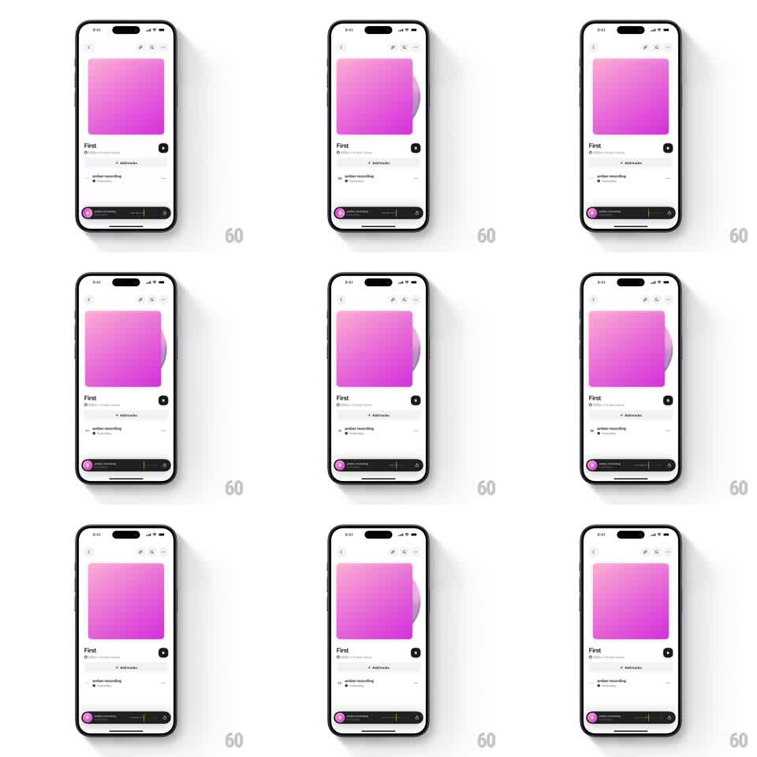

Media
Frame-by-frame

Rebuild this interaction 1:1: a vinyl-disc playback affordance - pressing play slides a spinning disc out from behind the square album artwork's right edge; pausing slides it back behind the artwork.

Rebuild this interaction 1:1: a vinyl-disc playback affordance - pressing play slides a spinning disc out from behind the square album artwork's right edge; pausing slides it back behind the artwork. ## Integration Integration: stack-agnostic spec - springs given as stiffness/damping, timed motions as duration + curve; map every value to your framework and animation library of choice. ## Scene Light track screen: big pink rounded-square artwork top, title "First", an "Add tracks" row, an "amber recording" row, and a dark mini player bar at the bottom. The vinyl disc is a same-pink circle with a center label, hidden behind the artwork. ## Motion spec Pattern: slide-out peek + continuous rotation. - Play: the disc slides out from behind the artwork's right edge, exposing ~60% of its diameter (translateX ~80px, spring ~300/24, ~350ms), and begins rotating at ~33rpm-equivalent (linear, infinite). - Pause: rotation eases to a stop over ~400ms (not instant) while the disc slides back fully behind the artwork (250ms). - Mini player bar play/pause icon swaps with a 150ms crossfade, synced to the disc motion. - The artwork card stays perfectly still - only the disc moves. ## Calibration - The disc tucks behind the artwork (z-order), never overlapping its face. - Rotation continues while visible; it is the "playing" truth, not decoration that freezes mid-slide. ## Reduced motion Disc slides without rotation; state change still slides. ## Don't miss - The slide direction is horizontal only - no vertical drift. - The disc's center label aligns with the artwork's vertical center at full peek.